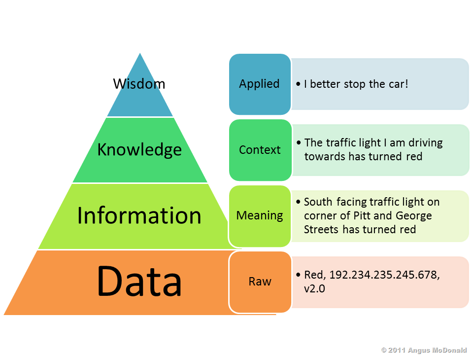
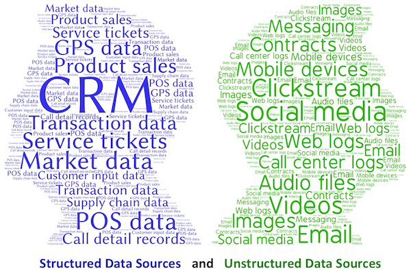
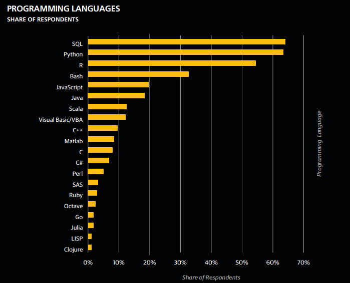
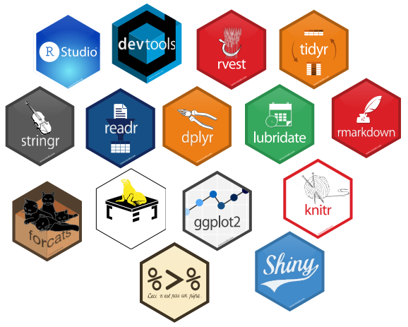

Introducción a la Ciencia de Datos
Sesión 1 - Presentación del tema / Parte II
Ismael Gómez Schmidt @ismaelgomezs
Data Scientist
¿Qué es un dato?
Es el objeto virtual mínimo o básico:
"el átomo virtual"No es suficiente con el dato, se requiere el metadato:
dato + metadato = información.
¿Qué es un dato?
Distinción entre
Estructurado(Tablas, Bases de datos) yNo estructurado(Texto, Video, Audio, Redes, etc). "Hay tanta basura como dato"Problema o paradoja de siempre:
"los datos no están"(o al menos no como nos gustaría)Los datos son lo 2do más importante. ¿Lo más importante?
La pregunta!
¿Qué tipos de datos hay?
Principales tipos y/o estructuras de datos
Numéricos
Caracteres (Texto)
Booleanos (TRUE, FALSE, NULL)
Temporales (Fecha, Hora, Intervalos)
Arreglos (Cadenas, listas, diccionarios, árboles)
Otros (info geográfica, codificaciones protocolares, arreglos específicos, etc.)
Clasificación según tipo de atributo
Otras clasificaciones de datos
Algunos formatos de documentos que contienen datos
- TXT, CSV
- XLS
- DOC, PDF
- XML, HTML, JSON
- PNG, JPG, WAV, MP3, AVI, MPG
Herramientas necesarias en Ciencias de Datos
Herramientas para
gestión de datos(almacenamiento y acceso a bases de datos, procesamiento distribuido, etc.)Herramientas para
edición de datos(orden, filtro, limpieza, particionamiento):PreprocesoSoftwares para
modelamiento de datos(Estadística, Minería de Datos, Machine Learning, etc.)Softwares para
visualización y/o publicación de datos(Graficar, Diseñar tableros, Interactividad, Estética, Reproducibilidad, etc.)Softwares con un entorno de desarrollo integrado (IDE) con "todo" incluido:
IDE de R (RStudio)y Python (PyCharm).
¿Por qué R?
¿Por qué R?
- Es
uno de los 3 lenguajes más usados en Data Science[Muy usado por la comunidad científica (Academia), incluido en los requisitos de trabajos]

¿Por qué R?
Tiene una
comunidad enormede desarrolladores y usuarios (sus librerías aumentan cada día) Es
gratisCon RStudio es posible
integrar en un solo entorno de trabajo la mayoría de las tareas necesariasdel workflow o pipeline de Data Science
Descarga e Instalación de R y RStudio
Descarga de R para Windows. Versión 3.4.4 en abril 2018.
Descarga de R Studio Desktop Open Source License, para Windows. Versión 1.1.442 en abril 2018.
Instalar R y luego R Studio en su disco duro (C:)
Propuestas de datasets
Survival of passengers on the Titanic
Un montón de datos en el sitio Data Chile
Fútbol (Kaggle, Copa Libertadores, Clasificatorias Conmebol u otro en datofutbol)
¿Otro?